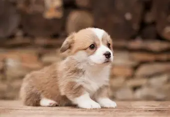
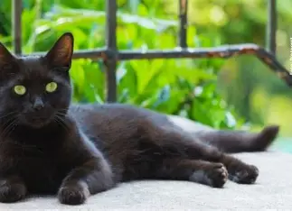
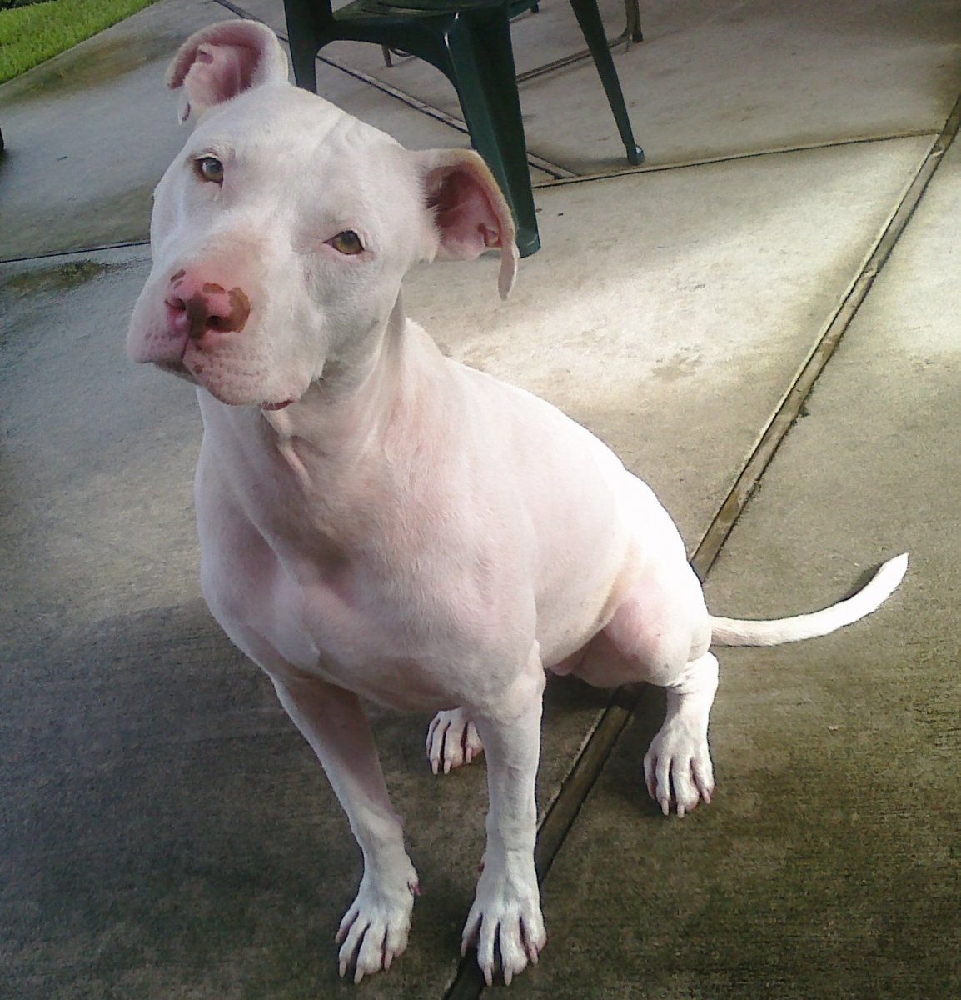
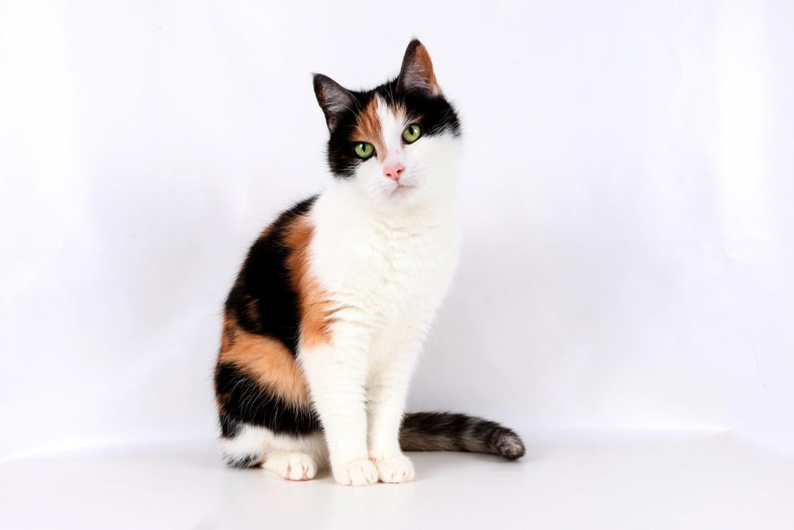

MASCOTAS

Tobi: 2 meses y busca una familia que lo ame para siempre. Muy hiperactivo y amoroso.
Negro: 6 meses y todavia sigue buscando una familia, muy jugueton y cariñoso
Roco: 10 meses, recien esta con nosotros y ya busca familia que lo ame para siempre. Muy dormilon e hiperactivo.
Luna: Hermosa gata de un año, busca familia que la cuide para siempre. Muy tranquila, no es de salir a la calle y super sobreprotectora.